소방설비산업기사(기계) (2016-05-08 기출문제)
1과목: 소방원론
1. 다음 열분해 반응식과 관계가 있는 분말 소화약제는?
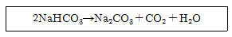
- 제1종 분말
- 제2종 분말
- 제3종 분말
- 제4종 분말
(정답률: 82%)

2. 어떤 유기화합물을 분석한 결과, 실험식이 CH2O이었으며 분자량을 측정하였더니 60이었다. 이 물질의 시성식은? (단, C,H,O의 원자량은 각각 12,1,16)
- CH3OH
- CH3COOCH3
- CH3COCH3
- CH3COOH
(정답률: 59%)
3. 건물내부에서 화재가 발생하여 실내온도가 27℃에서 1227℃로 상승한다면 이 온도 상승으로 인하여 실내 공기는 처음의 몇 배로 팽창하는가? (단, 화재에 의한 압력변화 등 기타 주어지지 않은 조건은 무시한다.)
- 3배
- 5배
- 7배
- 9배
(정답률: 66%)
4. 화재강도에 영향을 미치는 인자가 아닌 것은?
- 가연물의 비표면적
- 화재실의 구조
- 가연물의 배열상태
- 점화물 또는 발화원의 온도
(정답률: 49%)
5. 위험물의 위험성을 나태는 성질에 대한 설명으로 틀린 것은?
- 비등점이 낮아지면 인화의 위험성이 높다.
- 비중의 값이 클수록 위험성이 높다.
- 융점이 낮아질수록 위험성이 높다.
- 점성이 낮아질수록 위험성이 높다.
(정답률: 53%)
6. 건축물의 주요구조부에서 제외되는 것은?
- 차양
- 바닥
- 내력벽
- 지붕틀
(정답률: 81%)
7. 분말소화약제의 열분해에 의한 반응식 중 맞는 것은?
- 2NaHCO3+열 →NaCO3+2CO2+H2O
- 2KHCO3+열 →KCO3+2CO2+H2O
- NH4H2PO4+열 →HPO3+NH3+H2O
- 2KHCO3+(NH2)2CO+열→K2CO3+NH2+CO2
(정답률: 69%)
8. 온도 및 습도가 높은 장소에서 취급할 때 자연발화의 위험성이 가장 큰 것은?
- 질산나트륨
- 황화린
- 아닐린
- 셀룰로이드
(정답률: 83%)
9. 청정소화약제 중 HFC계열인 펜타플루오로에탄(HFC-125, CHF2CF3)의 최대 허용 설계 농도는?(오류 신고가 접수된 문제입니다. 반드시 정답과 해설을 확인하시기 바랍니다.)
- 0.2%
- 1.0%
- 7.5%
- 9.0%
(정답률: 40%)
10. 열에너지원의 종류 중 화학열에 해당하는 것은?
- 압축열
- 분해열
- 유전열
- 스파크열
(정답률: 75%)
11. 연소상태에 대한 설명 중 적합하지 못한 것은?
- 불완전연소는 산소의 공급량 부족으로 나타나는 현상이다.
- 가연성 액체의 연소는 액체 자체가 연소하고 있는 것이다.
- 분해연소는 가연물질이 가열분해되고, 그 때 생기는 가연성 기체가 연소하는 현상을 말한다.
- 표면연소는 가연물 그 자체가 직접 불에 타는 현상을 의미한다.
(정답률: 58%)
12. 유류화재에 대한 설명으로 틀린 것은?
- 액체상태에서 불이 붙을 수 있다.
- 유류는 반드시 휘발하여 기체상태에서만 불이 붙을 수 있다.
- 경질류 화재는 쉽게 발생할 수 있으나 열축적이 없어 쉽게 진화할 수 있다.
- 중질류 화재는 경질류 화재의 진압보다 어렵다.
(정답률: 54%)
13. 물분무소화설비의 주된 소화효과가 아닌 것은?
- 냉각효과
- 연쇄반응 단절효과
- 질식효과
- 희석효과
(정답률: 76%)
14. 화재 발생 위험에 대한 설명으로 틀린 것은?
- 인화점은 낮을수록 위험하다.
- 발화점은 높을수록 위험하다.
- 산소 농도는 높을수록 위험하다.
- 연소 하한계는 낮을수록 위험하다.
(정답률: 76%)
15. 다음 중 가연성가스가 아닌 것은?
- 수소
- 염소
- 암모니아
- 메탄
(정답률: 60%)
16. 실험군 쥐를 15분 동안 노출시켰을 때 실험군의 절반이 사망하는 치사 농도는?
- ODP
- GWP
- NOAEL
- ALC
(정답률: 70%)
17. 오존층 파괴 효과가 없는(ODP=0)소화약제는?
- Halon 1301
- HFC-227ea
- HCFC BLEND A
- Halon 1211
(정답률: 50%)
18. 응축상태의 연소를 무엇이라 하는가?
- 작열연소
- 불꽃연소
- 폭발연소
- 분해연소
(정답률: 66%)
19. 물의 물리적 성질에 대한 설명으로 틀린 것은?(오류 신고가 접수된 문제입니다. 반드시 정답과 해설을 확인하시기 바랍니다.)
- 물의 비열은 1cal/g∙℃이다.
- 물의 용융열은 79.7cal/g이다.
- 물의 증발잠열은 439kcal/g이다.
- 대기압하에서 100℃ 물이 액체에서 수증기로 바뀌면 체적은 약 1600배 증가한다.
(정답률: 82%)
20. 화재의 종류에서 A급 화재에 해당하는 색상은?
- 황색
- 청색
- 백색
- 적색
(정답률: 77%)
2과목: 소방유체역학
21. 유체에 대한 일반적인 설명으로 틀린 것은?
- 유체 유동 시 비점섬 유체는 마찰 저항이 존재하지 않는다.
- 실제 유체에서는 마찰저항이 존재한다.
- 뉴턴(Newton)의 점성법칙은 압력, 유체의 변형률에 관한 함수 관계를 나타내는 법칙이다.
- 전단응력이 가해지면 정지상태로 있을 수 없는 물질을 유체라 한다.
(정답률: 53%)
22. 이산화탄소가 압력 2×105, 비체적 0.04m3/kg상태로 저장되었다가, 온도가 일정한 상태로 압축되어 압력이 8×105Pa되었다면, 변화 후 비체적은 몇 m3/kg인가?
- 0.01
- 0.02
- 0.16
- 0.32
(정답률: 37%)
23. 펌프 입구에서의 압력 80kPa, 출구에서의 압력 160kPa이고, 이 두 곳의 높이 차이(출구가 높음)는 1m 이다. 입구 및 출구 관의 직경은 같으며 송출유량이 0.02m3/s일 때 효율 90%인 펌프에 필요한 축동력은 약 몇 kW인가?
- 1.4
- 1.6
- 1.8
- 2.0
(정답률: 34%)
24. 그림과 같은 수평 관로에서 유체가 ①에서 ②로 흐르고 있다. ①, ②에서의 압력과 속도를각각 P1, V1 및 P2, V2라 하고 손실수두를 Hℓ이라 할 때 에너지 방정식은?
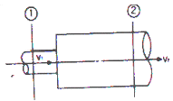
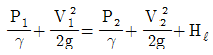
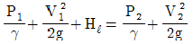
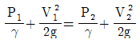
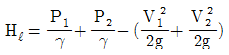
(정답률: 59%)
25. 노즐에서 10m/s로서 수직방향으로 물을 분사할 때 최대 상승높이는 약 몇 m인가? (단, 저항은 무시한다.)
- 5.10
- 6.34
- 3.22
- 2.65
(정답률: 58%)
26. 옥내소화전 노즐선단에서 물 제트의 방사량이 0.1m3/min, 노즐선단 내경이 25mm일 때 방사압력(계기압력)은 약 몇 kPa 인가?
- 3.27
- 4.41
- 5.32
- 5.78
(정답률: 29%)
27. 뉴턴 유체의 정의로 옳은 것은?
- 전단응력과 전단변형률이 비례하는 유체
- 전단응력과 전단변형률이 반비례하는 유체
- 수직응력과 전단변형률이 비례하는 유체
- 수직응력과 전단변형률이 반비례하는 유체
(정답률: 59%)
28. 질량과 체적이 각각 4400kg, 5.1m3인 유체의 비중은 약 얼마인가?
- 0.86
- 8.6
- 10.6
- 11.6
(정답률: 49%)
29. 파이프 속을 흐르는 유체의 압력을 측정하기 위한 계기가 아닌 것은?
- 부르돈 압력계
- 마노미터
- 위어
- 피에조미터
(정답률: 62%)
30. 어느 이상기체 10kg의 온도를 200℃만큼 상승시키는 데 필요한 열량은 압력이 일정한 경우와 체적이 일정한 경우에 375kJ의 차이가 있다. 이 이상기체의 기체상수(J/kgㆍK)로 옳은 것은?
- 185.5
- 187.5
- 191.5
- 194.5
(정답률: 48%)
31. 하젠-윌리엄스(Hagen-Williams)공식에서 P는 무엇을 나타내는가? (단, Q = 유량[L/min], C = 조도계수, d= 관의 내경[mm], L = 관의길이[m])
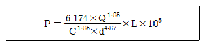
- 펌프의 가압 시 생기는 날개 이면의 압축손실
- 펌프의 1차측 및 2차측의 압력차
- 배관흐름 중 외부로 누수되는 압력손실
- 배관 내의 마찰손실
(정답률: 53%)
32. 그림과 같이 3m/s의 속도로 분류의 방향을 따라 이동하는 평판에 10m/s의 속도로 물이 분출하여 충돌한다. 분류의 단면적이 0.02m2일 때, 평판이 받는 힘 F는 몇 N인가? (단, 물의 밀도는 1000kg/m3으로 한다.)(오류 신고가 접수된 문제입니다. 반드시 정답과 해설을 확인하시기 바랍니다.)
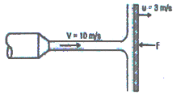
- 960
- 980
- 1000
- 1020
(정답률: 60%)
33. 온도차이 40℃, 연전도율 k1, 두께 5cm인 벽을 통한 열유속(heat flux)과 온도차이 20℃, 열전도율 k2, 두께 10cm인 벽을 통한 열유속이 같다면 이 두 재질의 열전도율의 비 k2/k1의 값은?
- 1/4
- 1/2
- 2
- 4
(정답률: 33%)
34. 곧은 원형 관에서의 속도 분포는
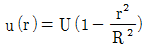
으로 표현된다. 여기서 r은 관의 중심선으로부터 측정되었고, R은 관의 반지름이다. 이때 관에서의 최적 유량 Q를 나타낸 식은 어느 것인가? (단, 체적유량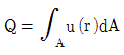
이다.)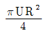
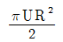
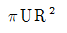
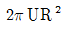
(정답률: 56%)
35. 하나의 잘 설계된 원심 펌프의 임펠러 직경이 10cm이다. 똑같은 모양의 펌프를 임펠러 직경이 20cm로 만들었을 때, 유량계수를 같게 하고 10cm에서와 같은 회전수에서 운전하면 새로운 펌프의 설계점 성능 특성 중 수두 또는 양정은 몇 배가 되는가? (단, 레이놀즈수의 영향은 무시한다.)
- 동일
- 2배
- 4배
- 8배
(정답률: 52%)
36. 체적이 10m3인 변형하지 않는 용기 내에 산소 2kg과 수소 2kg로 구성된 혼합 기체가 들어있다. 용기 내의 온도가 30℃일 때 용기 내 압력은 몇 kPa인가? (단, 산소의 기체상수는 259.8J/kg∙K,수소의 기체상수는 4147J/kg∙K이며, 화학반응은 일어나지 않는 것으로 한다.)
- 267.2
- 271.3
- 277.3
- 281.3
(정답률: 35%)
37. 급확대관 혹은 급축소관에서의 손실수두에 관한 설명 중 옳지 않은 것은?
- 입출구 속도차의 제곱에 비례한다.
- 중력가속도에 반비례한다.
- 급축소관은 입출구 속도차의 제곱에 반비례한다.
- 급확대관에서 굵은관 직경이 가는관 직경에 비해 매우 클 경우 손실계수는 약 1이다.
(정답률: 51%)
38. 바닷물 위에 떠 있는 물체에 작용하는 부력에 대한 설명으로 옳은 것은? (단, 정지하고 있는 상태이다.)
- 물체의 중량보다 크다.
- 물체의 중량보다 적다.
- 물체에 의하여 배제된 액체의 무게와 같다.
- 물체에 의하여 배제된 액체의 무게에 유체의 비중량을 곱한 무게와 같다.
(정답률: 56%)
39. 직경 7.62cm, 길이가 10m인 소방호스에 1.67×10-3m3/s의 물이 흐르고 있을 때 평균유속은 약 몇m/s인가?
- 0.27
- 0.37
- 0.47
- 0.57
(정답률: 53%)
40. 폭 1m, 길이 2m인 수직평판이 물속 0.5m 깊이에 잠겨있다. 이 평판에 작용하는 정수력은 얼마인가?
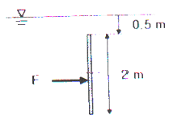
- 9.8kPa
- 14.7kPa
- 24.5kPa
- 29.4kPa
(정답률: 30%)
3과목: 소방관계법규
41. 공동 소방안전관리자를 선임하여야 하는 특정소방대상물 중 고층건축물은 지하층을 제외한 층수가 몇 층 이상인 건축물만 해당되는가?
- 6층
- 11층
- 20층
- 30층
(정답률: 75%)
42. 공장ㆍ창고가 밀집한 지역에서 화재로 오인할 만한 우려가 있는 불을 피우는 자가 관할소방본부장에게 신고를 하지 않아 소방 자동차를 출동하게 한 자에 대한 벌칙은?
- 200만원 이하의 과태료
- 100만원 이하의 과태료
- 50만원 이하의 과태료
- 20만원 이하의 과태료
(정답률: 56%)
43. 다음 중 소방대상물이 아닌 것은?
- 산림
- 항해 중인 선박
- 인공 구조물
- 선박 건조 구조물
(정답률: 82%)
44. 지정수량 미만인 위험물의 저장 또는 취급에 관한 기술상의 기준은 무엇으로 정하는가?
- 대통령령
- 국민안전처장관령
- 총리령
- 시ㆍ도의 조례
(정답률: 71%)
45. 일반음식점에서 조리를 위하여 불을 사용하는 설비를 설치할 경우 화재예방을 위하여 지켜야 할 사항 중 틀린 것은?
- 주방설비에 부속된 배기덕트는 0.5mm이상의 아연도금강판 또는 이와 동등 이상의 내식성 불연재료로 설치할 것
- 주방시설에는 기름을 제거할 수 있는 필터등을 설치할 것
- 열을 발생하는 조리기구는 반자 또는 선반으로부터 0.5m 이상 떨어지게 할 것
- 열을 발생하는 조리기구로부터 0.15m 이내의 거리에 있는 가연성 주요구조부는 석면판 또는 단열성이 있는 불연재로 덮어씌울 것
(정답률: 53%)
46. 탱크안전성능검사의 대상이 되는 탱크 중 기초ㆍ지반검사를 받아야 하는 옥외탱크저장소의 액체위험물탱크의 용량은 몇 L이상인가?
- 100만
- 10만
- 1만
- 1천
(정답률: 59%)
47. 소화용수시설별 설치기준 중 다음 ( ) 안에 모두 알맞은 것은?
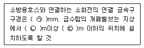
- ㉠ 65, ㉡ 0.8, ㉢ 1.5
- ㉠ 50, ㉡ 0.8, ㉢ 1.5
- ㉠ 65, ㉡ 1.5, ㉢ 1.7
- ㉠ 50, ㉡ 1.5, ㉢ 1.7
(정답률: 54%)
48. 연면적이 33m2이상이 되지 않아도 소화기구를 설치하여야 하는 특정소방대상물은?
- 변전실
- 가스시설
- 판매시설
- 유흥주점영업소
(정답률: 57%)
49. 건축허가 등의 동의대상물의 범위 중 노유자시설의 연면적 기준은?
- 100m2이상
- 200m2이상
- 400m2미만
- 400m2이상
(정답률: 59%)
50. 출동한 소방대의 소방장비를 파손하거나 그 효용을 해하여 화재진압ㆍ인명구조 또는 구급 활동을 방해하는 행위를 한 자의 벌칙은?(오류 신고가 접수된 문제입니다. 반드시 정답과 해설을 확인하시기 바랍니다.)
- 10년 이하의 징역 또는 5000만원 이하의 벌금
- 5년 이하의 징역 또는 3000만원 이하의 벌금
- 3년 이하의 징역 또는 1500만원 이하의 벌금
- 2년 이하의 징역 또는 1000만원 이하의 벌금
(정답률: 65%)
51. 다음 중 특정소방대상물의 관계인의 업무가 아닌 것은? (단, 소방안전관리대상물을 제외한다.)
- 자위소방대의 구성ㆍ운영ㆍ교육
- 소방시설의 유지ㆍ관리
- 화기취급의 감독
- 방화구획의 유지ㆍ관리
(정답률: 39%)
52. 기술인력 중 보조기술인력에 속하지 않는 자는?
- 소방설비기사
- 소방설비산업기사
- 소방공무원 2년 경력자
- 소방관련학과 졸업자
(정답률: 61%)
53. 위험물의 지정수량에서 산화성 고체인 중크롬산염류의 지정수량은?
- 3000kg
- 1000kg
- 300kg
- 50kg
(정답률: 60%)
54. 대지경계선 안에 2이상의 건축물이 있는 경우 연소 우려가 있는 구조로 볼 수 있는 것은?
- 1층 외벽으로부터 수평거리 6m이상이고 개구부가 설치되지 않은 구조
- 2층 외벽으로부터 수평거리 10m 이상이고 개구부가 설치되지 않은 구조
- 2층 외벽으로부터 수평거리 6m 이고 개구부가 다른 건축물을 향하여 설치된 구조
- 1층 외벽으로부터 수평거리 10m 이고 개구부가 다른 건축물을 향하여 설치된 구조
(정답률: 54%)
55. 소방시설업의 등록을 하지 않고 영업을 한 자에게 대한 벌칙은? (관련 규정 개정전 문제로 여기서는 기존 정답인 4번을 누르면 정답 처리됩니다. 자세한 내용은 해설을 참고하세요.)
- 1년 이하의 징역 또는 1000만원 이하의 벌금
- 2년 이하의 징역 또는 1500만원 이하의 벌금
- 3년 이하의 징역 또는 1000만원 이하의 벌금
- 3년 이하의 징역 또는 1500만원 이하의 벌금
(정답률: 57%)
56. 소방시설 등에 대한 자체점검 중 작동기능 점검의 실시 횟수로 옳은 것은?
- 분기에 1회 이상
- 6개월에 2회이상
- 연 1회 이상
- 연 2회 이상
(정답률: 68%)
57. 위험물 제조소 등에서 자동화재탐지설비를 설치하여야 할 제조소 및 일반취급소는 옥내에서 지정수량 몇 배 이상의 위험물을 저장ㆍ취급하는 곳인가?
- 지정수량 5배 이상
- 지정수량 10배 이상
- 지정수량 50배 이상
- 지정수량 100배 이상
(정답률: 43%)
58. 소방용수시설인 저수조의 설치기준으로 옳은 것은?
- 흡수부분의 수심이 0.5m 이하일 것
- 지면으로부터의 낙차가 4.5m 이하일 것
- 흡수관의 투입구가 사각형의 경우에는 한변의 길이가 60cm 이하일 것
- 저수조에 물을 공급하는 방법은 상수도에 연결하여 수동으로 급수되는 구조일 것
(정답률: 62%)
59. 소방시설공사의 하자보수 보증기간이 3년이 아닌 것은?
- 자동소화장치
- 무선통신보조설비
- 자동화재탐지설비
- 간이스프링클러설비
(정답률: 71%)
60. 특정소방대상물에 설치된 전산실의 경우 물분무등소화설비를 설치해야 하는 바닥면적 기준은 몇 m2이상인가? (단, 하나의 방화구획 내에 둘 이상의 실이 설치된 경우 이를 하나의 실로 본다.)
- 100m2
- 300m2
- 500m2
- 1000m2
(정답률: 48%)
4과목: 소방기계시설의 구조 및 원리
61. 호스릴이산화탄소소화설비의 설치기준으로 틀린 것은?
- 노즐은 20℃에서 하나의 노즐마다 60kg/min이상의 소화약제를 방사할 수 있어야 한다.
- 소화약제 저장용기는 호스릴 3개마다 1개 이상 설치해야 한다.
- 소화약제 저장용기의 가장 가까운 곳의 보기 쉬운 곳에 표시등을 설치해야 한다.
- 소화약제 저장용기의 개방밸브는 호스의 설치장소에서 수동으로 개폐할 수 있어야 한다.
(정답률: 54%)
62. 분말소화약제의 가압용가스 용기에는 몇 MPa이하의 압력에서 조정이 가능한 압력조정기를 설치하는가?
- 2.5
- 5
- 7.5
- 10
(정답률: 70%)
63. 가압송수장치에 있어 수원의 수위가 펌프보다 낮은 위치에 있을 때 배관 흡수구에 사용할 수 있는 밸브는?
- 풋 밸브
- 앵글 밸브
- 게이트 밸브
- 스모렌스키 체크밸브
(정답률: 62%)
64. 평상시 최고주위온도가 70℃인 장소에 폐쇄형 스프링클러헤드를 설치하는 경우 표시온도가 몇 ℃인 것을 설치해야 하는가?
- 79℃ 미만
- 79℃ 이상 121℃ 미만
- 121℃ 이상 162℃ 미만
- 162℃ 이상
(정답률: 58%)
65. 66000V이하의 고압의 전기기기가 있는 장소에 물분무헤드 설치 시 전기기기와 물분무헤드 사이의 최소 이격거리는 몇 m 인가?
- 0.7
- 1.1
- 1.8
- 2.6
(정답률: 52%)
66. 연결살수설비의 송수구 설치기준에 관한 설명으로 옳은 것은?
- 지면으로부터 높이가 1m 이상 1.5m 이하의 위치에 설치할 것
- 개방형헤드를 사용하는 연결살수설비에 있어서 하나의 송수구역에 설치하는 살수 헤드의 수는 15개 이하가 되도록 할 것
- 폐쇄형헤드를 사용하는 송수구의 호스접결구는 각 송수구역마다 설치할 것
- 폐쇄형헤드를 사용하는 설비의 경우에는 송수구ㆍ자동배수밸브ㆍ체크밸브의 순으로 설치할 것
(정답률: 48%)
67. 펌프의 토출관에 압입기를 설치하여 포소화약제 압입용 펌프로 포소화약제를 압입시켜 혼합하는 포소화약제의 혼합방식은?
- 펌프 푸로포셔너
- 프레져 푸로포셔너
- 라인 푸로포셔너
- 프레져사이드 푸로포셔너
(정답률: 56%)
68. 물분무소화설비를 설치하는 차고 또는 주차장의 배수설비 설치기준이 틀린 것은?
- 차량이 주차하는 장소의 적당한 곳에 높이 10cm 이상의 경계턱으로 배수구를 설치할 것
- 배수구에는 새어 나온 기름을 모아 소화할 수 있도록 길이 20m 이하마다 집수관ㆍ소화핏트 등 기름분리장치를 설치할 것
- 차량이 주차하는 바닥은 배수구를 향하여 100분의 2 이상의 기울기를 유지할 것
- 배수설비는 가압송수장치의 최대송수능력의 수량을 유효하게 배수할 수 있는 크기 및 기울기로 할 것
(정답률: 63%)
69. 간이소화용구 중 삽을 상비한 마른 모래 50L 이상의 것 1포의 능력 단위는?
- 0.5
- 1
- 2
- 4
(정답률: 74%)
70. 호스릴이산화탄소소화설비는 방호대상물의 각 부분으로부터 하나의 호스접결구까지의 수평 거리는 최대 몇 m 이하인가?
- 10
- 15
- 20
- 25
(정답률: 60%)
71. 차고 또는 주차장에 설치하는 분말소화설비의 소화약제는?
- 제1종 분말
- 제2종 분말
- 제3종 분말
- 제4종 분말
(정답률: 77%)
72. 옥내소화전설비의 가압송수장치를 압력수조 방식으로 할 경우에 압력수조에 설치하는 부속장치 중 필요하지 않은 것은?
- 수위계
- 급기관
- 맨홀
- 오버 플로우관
(정답률: 59%)
73. 소화용수설비의 저수조가 지표면으로부터의 깊이가 몇 m 이상인 지하에 있는 경우에 가압송수장치를 설치하는가? (단, 지표면으로부터의 깊이는 수조 내부 바닥까지의 깊이를 말한다.)
- 4
- 4.5
- 5
- 5.5
(정답률: 74%)
74. 입원실이 있는 3층 산후조리원에 적응성이 없는 피난기구는?
- 미끄럼대
- 승강식피난기
- 피난용트랩
- 공기안전매트
(정답률: 67%)
75. 폐쇄형스프링클러헤드가 설치된 건물에 하나의 유수검지장치가 담당해야 할 방호구역의 바닥 면적은 몇 m2를 초과하지 않아야 하는가? (단, 폐쇄형스프링클러설비에 격자형배관방식은 제외한다.)
- 1000
- 2000
- 2500
- 3000
(정답률: 57%)
76. 포워터스프링클러 헤드는 특정소방대상물의 천장 또는 반자에 설치하되, 바닥면적 몇 m2 마다 1개 이상을 설치하여야 하는가?g
- 4
- 6
- 8
- 9
(정답률: 60%)
77. 제연설비에 사용하는 송풍기의 종류가 아닌 것은?
- 왕복형
- 다익형
- 리밋 로드형
- 터보형
(정답률: 50%)
78. 관람장은 해당 용도의 바닥면적 몇 m2마다 능력단위 1단위 이상의 소화기구를 비치해야 하는가?
- 30
- 50
- 100
- 200
(정답률: 58%)
79. 완강기 및 간이완강기의 최대사용하중 기준은 몇 N 이상인가?
- 800
- 1000
- 1200
- 1500
(정답률: 78%)
80. 계단실 및 그 부속실을 동시에 제연구역으로 선정 시 방연풍속은 최소 몇 m/s인가?
- 0.3
- 0.5
- 0.7
- 1.0
(정답률: 67%)